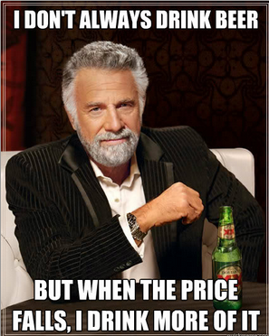
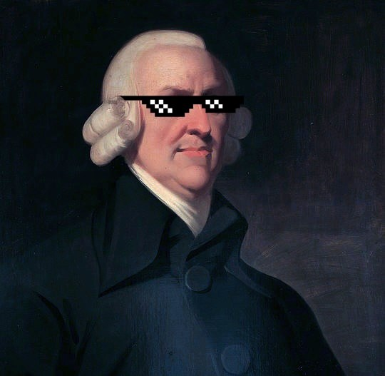
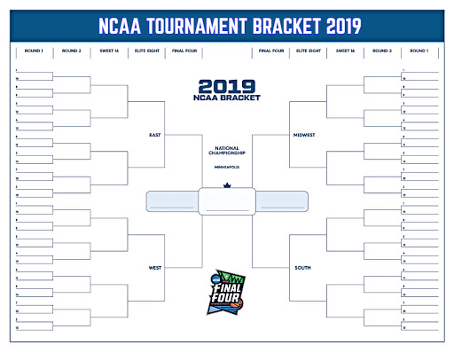
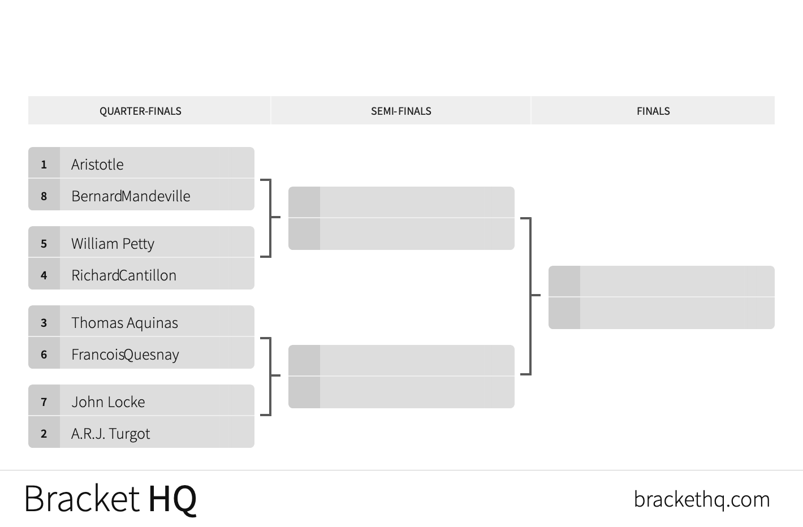

Tournament
The Most Interesting Economist in History Tournament



We will run a tournament for “the most interesting economist in history.” Each era of economic thought (Pre-Classical, Classical, Neoclassical, and Modern) will have its own “division”, in which we will vote for the champion of each era (out of up to 8 thinkers), who will then go head to head against the champions of other divisions for the title.
Once we complete an era, we will hold the votes in head-to-head matchups between economists. Your assignment is to write up a short explanation behind your vote (1-3 sentences) between each pair. This will allow you to remember and place each thinker in the context of the history of economic thought.
Your grade for each round of votes that requires explanations (not every round will require explanation) will be out of 5 points, and you will be graded on your reasoning for your votes. Your average grade for your explanations across all of the rounds (out of 100%) will constitute 10% of your final course grade.
Current Status:
Pre-Classical Division
